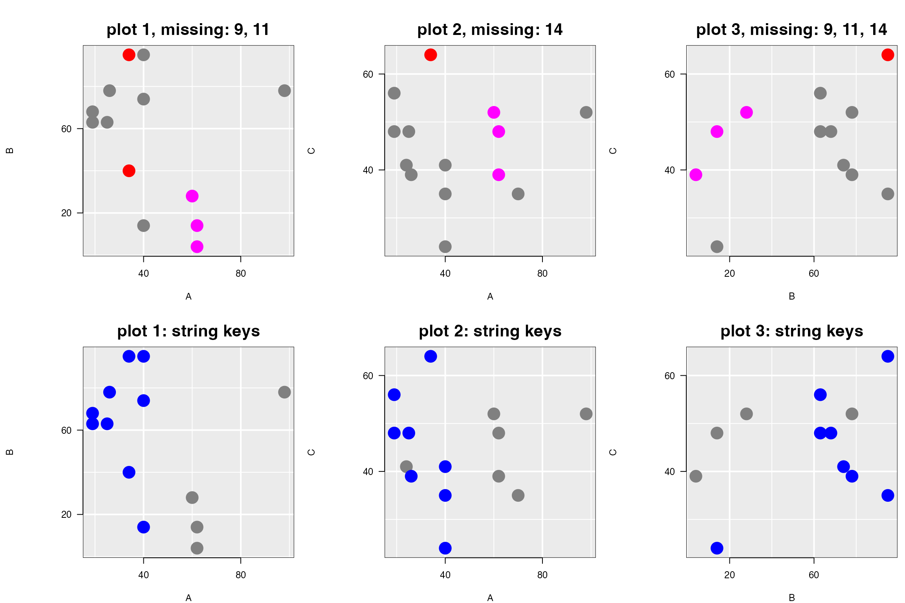

Linking and missing data
R. W. Oldford and Zehao Xu
2021-09-25
Source:vignettes/linking.Rmd
linking.Rmdloon’s linking model
Loon’s linking model has the following three parts
- a
linkingGroupwhich identifies which plots are linked - a
linkingKey, a character vector where each element is a key uniquely identifying a single observation in the plot (no two observations in the same plot can have the same value in the linking key), and - the linked display states each plot has declared (e.g. see
l_getlinkedStates()).
Observations in different plots (in the same linking group) are linked (in that their linked states change together) if and only if they have the same linking key.
Points appearing in different plots (in the same linkingGroup) which matched on the value of their linkingKey will share the same value for their linked states.
missing data
Loon’s linking model works perfectly when the dataset being plotted is complete, that is when there are no missing values for any of the variables being plotted. It even works well when there are missing values, with no effort (for the most part) on the part of the user.
Key to making this all work is maintaining the correct linking key for each observation in the plot. Observations in two different but linked plots are identified as being the same if and only if their linking key matches. Hence, managing the linking key correctly is essential to linking plots.
To see how this works, we first need a small dataset with missing values.
an artificial example
Consider the following artificially generated dataset:
data <- data.frame(A = c(19, 19, 25, 62, 34,
98, 62, 40, 24, 60,
70, 40, 40, 34, 26),
B = c(68, 63, 63, 4, 95,
78, 14, 14, NA, 28,
NA, 95, 74, 40, 78),
C = c(48, 56, 48, 39, 64,
52, 48, 24, 41, 52,
35, 35, 41, NA, 39)
)
summary(data)
#> A B C
#> Min. :19.00 Min. : 4.00 Min. :24.00
#> 1st Qu.:25.50 1st Qu.:28.00 1st Qu.:39.00
#> Median :40.00 Median :63.00 Median :44.50
#> Mean :43.53 Mean :54.92 Mean :44.43
#> 3rd Qu.:61.00 3rd Qu.:78.00 3rd Qu.:51.00
#> Max. :98.00 Max. :95.00 Max. :64.00
#> NA's :2 NA's :1There are 15 observations in the dataset; variable A is complete (has no missing values), whereas variables B and C are missing 2 and 1 observations, respectively.
linked plots
Interactive ggplots can be created using the interactive grammar as follows
# prelims
rowNums <- 1:nrow(data)
AorB <- is.na(data$A)|is.na(data$B)
AorC <- is.na(data$A)|is.na(data$C)
BorC <- is.na(data$B)|is.na(data$C)
size <- 5
# B vs A scatterplot
titleStringBvsA <- paste0("plot 1, missing: ",
paste0(rowNums[AorB], collapse = ", "))
ggp1 <- ggplot(data,
mapping = aes(x = A, y = B)) +
ggtitle(titleStringBvsA) +
geom_point(color = "grey", size = size) +
linking(linkingGroup = "NA example")
# C vs A scatterplot
titleStringCvsA <- paste0("plot 2, missing: ",
paste0(rowNums[AorC], collapse = ", "))
ggp2 <- ggplot(data,
mapping = aes(x = A, y = C)) +
ggtitle(titleStringCvsA) +
geom_point(color = "grey", size = size) +
linking(linkingGroup = "NA example")
# C vs B scatterplot
titleStringCvsB <- paste0("plot 3, missing: ",
paste0(rowNums[BorC], collapse = ", "))
ggp3 <- ggplot(data,
mapping = aes(x = B, y = C)) +
ggtitle(titleStringCvsB) +
geom_point(color = "grey", size = size) +
linking(linkingGroup = "NA example")Each of these can be turned into interactive plots using loon.ggplot()
lp1 <- loon.ggplot(ggp1)
#> Warning: Removed {9, 11} as the 2 observations which contain missing values.
lp2 <- loon.ggplot(ggp2)
#> Warning: Removed {14} as the 1 observation which contains missing values.
lp3 <- loon.ggplot(ggp3)
#> Warning: Removed {9, 11, 14} as the 3 observations which contain missing values.
#
# and (using gridExtra's grid.arrange() function)
# appear as
library(gridExtra)
grid.arrange(plot(lp1, draw = FALSE),
plot(lp2, draw = FALSE),
plot(lp3, draw = FALSE),
nrow = 1)
Note that warning messages appear when missing data were detected and removed from the plotting.
effect of linking
Being linked, if the participating linked states are changed in one of the plots, these will result in changes in the other two plots in the linking group "NA example".
# First choose some points in the first interactive plot
selection <- lp1["x"] > 50 & lp1["x"] < 80
lp1["selected"] <- selection
colorMeRed <- lp1["x"] == 34
lp1["color"][colorMeRed] <- "red"
# And the plots now look like
grid.arrange(plot(lp1, draw = FALSE),
plot(lp2, draw = FALSE),
plot(lp3, draw = FALSE),
nrow = 1)
Now all (programmatic) interactions were carried out on lp1, the leftmost plot plot 1, and these were then pushed to the other two plots lp2 and lp3, appearing here titled with plot 2 and plot 3. As plot 1 shows, two red points appear at A == 34 and three selected (magenta) points between 50 and 80.
Only one red point appears in plot 2 and plot 3; the value is missing on variable C for one of the two red points in plot 1, so it cannot appear in either plot 2 or plot 3. This the missing value 14 (i.e., the NA in row 14, variable C, of data).
Three magenta coloured points appear in all three plots.
In plot 1 (i.e., lp1), these points have "x" value (lp1["x"]), or value of variable A, between 50 and 80. Note that in plot 2 (i.e., lp2) has a fourth point with a value in this range for A. However, it does not appear highlighted because this point is missing in plot 1 – its value on B is missing.
linking keys
The linking works as expected because the linkingKey is determined at the creation of each plot lp1, lp2, and lp3. The linking keys of each plot are as follows:
lp1["linkingKey"]
#> [1] "0" "1" "2" "3" "4" "5" "6" "7" "9" "11" "12" "13" "14"
lp2["linkingKey"]
#> [1] "0" "1" "2" "3" "4" "5" "6" "7" "8" "9" "10" "11" "12" "14"
lp3["linkingKey"]
#> [1] "0" "1" "2" "3" "4" "5" "6" "7" "9" "11" "12" "14"These strings uniquely identify each observation.
By default, the linking keys are the strings "0", "1", … , "n - 1" where "n" is nrow(data) = 15. This is simply a zero-based indexing of the rows from the dataset used when the plot was created. The row numbers of the data are had from the (default) linking key of each plot as follows:
# The row numbers of `data` in each plot
# lp1
1 + as.numeric(lp1["linkingKey"])
#> [1] 1 2 3 4 5 6 7 8 10 12 13 14 15
# lp2
1 + as.numeric(lp2["linkingKey"])
#> [1] 1 2 3 4 5 6 7 8 9 10 11 12 13 15
# lp3
1 + as.numeric(lp3["linkingKey"])
#> [1] 1 2 3 4 5 6 7 8 10 12 13 15The user can also provide any vector of unique strings as the linking key.
For example,
newUniqueKeys <- paste("linking key number", 1:nrow(data))
# Using these keys, the calls would now appear as
ggp1_stringKeys <- ggplot(data,
mapping = aes(x = A, y = B)) +
ggtitle("plot 1: string keys") +
geom_point(color = "grey", size = size) +
linking(linkingGroup = "NA example", linkingKey = newUniqueKeys)
# C vs A scatterplot
ggp2_stringKeys <- ggplot(data,
mapping = aes(x = A, y = C)) +
ggtitle("plot 2: string keys") +
geom_point(color = "grey", size = size) +
linking(linkingGroup = "NA example", linkingKey = newUniqueKeys)
# C vs B scatterplot
ggp3_stringKeys <- ggplot(data,
mapping = aes(x = B, y = C)) +
ggtitle("plot 3: string keys") +
geom_point(color = "grey", size = size) +
linking(linkingGroup = "NA example", linkingKey = newUniqueKeys)These would be turned interactive as follows
lp1_stringKeys <- loon.ggplot(ggp1_stringKeys)
#> Warning: Removed {9, 11} as the 2 observations which contain missing values.
lp2_stringKeys <- loon.ggplot(ggp2_stringKeys)
#> Warning: Removed {14} as the 1 observation which contains missing values.
lp3_stringKeys <- loon.ggplot(ggp3_stringKeys)
#> Warning: Removed {9, 11, 14} as the 3 observations which contain missing values.and can be interacted with as before, now for example:
colorMeBlue <- lp1_stringKeys["x"] < 50
lp1_stringKeys["color"][colorMeBlue] <- "blue"These, and the earlier three plots, now appear as.
grid.arrange(plot(lp1, draw = FALSE),
plot(lp2, draw = FALSE),
plot(lp3, draw = FALSE),
plot(lp1_stringKeys, draw = FALSE),
plot(lp2_stringKeys, draw = FALSE),
plot(lp3_stringKeys, draw = FALSE),
nrow = 2) Note that all six plots belong to the same linking group
lp1["linkingGroup"]
#> [1] "NA example"
lp1_stringKeys["linkingGroup"]
#> [1] "NA example"While all six plots are linked, changes require that linking keys also match. Linking keys are shared by plots in the first row and by plots in the second row, but not between plots in the first row and plots in the second. The number of linking keys in common between different pairs of plot is easily determined as follows:
length(intersect(lp1["linkingKey"], lp2["linkingKey"]))
#> [1] 12
length(intersect(lp1_stringKeys["linkingKey"], lp2_stringKeys["linkingKey"]))
#> [1] 12
length(intersect(lp1["linkingKey"], lp1_stringKeys["linkingKey"]))
#> [1] 0Both linking group and linking key must match.
challenges if chaining loon.ggplot()
Linking problems can possibly arise whenever a ggplot constructed from a loon plot is then made interactive again.
Suppose a loon plot, like lp1, is turned into a ggplot (typically, after some interactive changes) via loon.ggplot(), and the resulting new ggplot is then itself turned into another interactive plot. The new interactive plot will not necessarily share the same linking information as the original.
This is because the second interactive plot will have the default values of linkingGroup, linkingKey and linked display states; the values of these from the first interactive plot were lost in the transformation to the ggplot. That is,
- the linking group is not automatically carried over to the second interactive plot
- the linked states are not automatically carried over to the second interactive plot
- the default linking keys in the second interactive plot are
"0", …,"n-1"wherenis the number of observations that were displayed in the first plot.
Moreover, should the first plot have some observations "selected", when building the ggplot the data are reordered so that those that were "selected" appear on top (as they do in an interactive plot). This change in order means that an interactive plot produced from this ggplot will have the data in a different order than the first interactive plot, causing the default linking keys to match different observations in the two plots.
There is no problem in linking if the first interactive plot
- has no observations selected,
- has default linking keys, and
- was built with a data set having no missing values.
Otherwise, the calls to the transformations might be adjusted as follows. If the interactive plot lp1 has observations selected, then the ggplot will preserve the order of the observations will be preserved with the argument selectedOnTop = FALSE, as in
# Get a ggplot from the loon plot, make sure the selected points
# do not change the order of the
ggp_lp1 <- loon.ggplot(lp1, selectedOnTop = FALSE)Also, when data are missing or non-default linking keys are being used, the linking keys (and possibly linking group) have to be carried over from the original interactive plot to the next, as in
lp_ggp_l1_lk <- loon.ggplot(ggp_lp1,
linkingKey = lp1["linkingKey"],
linkingGroup = "NA example")Then the two interactive plots will link properly.
Fortunately, a chain of transformations (e.g., ggplot to loon to ggplot to loon, etc.) will rarely arise in practice. More usual will be a single transformation step, either loon to ggplot OR ggplot to loon.
For more on changes incurred by the transformations and the effects of chaining see the vignette There and back again.